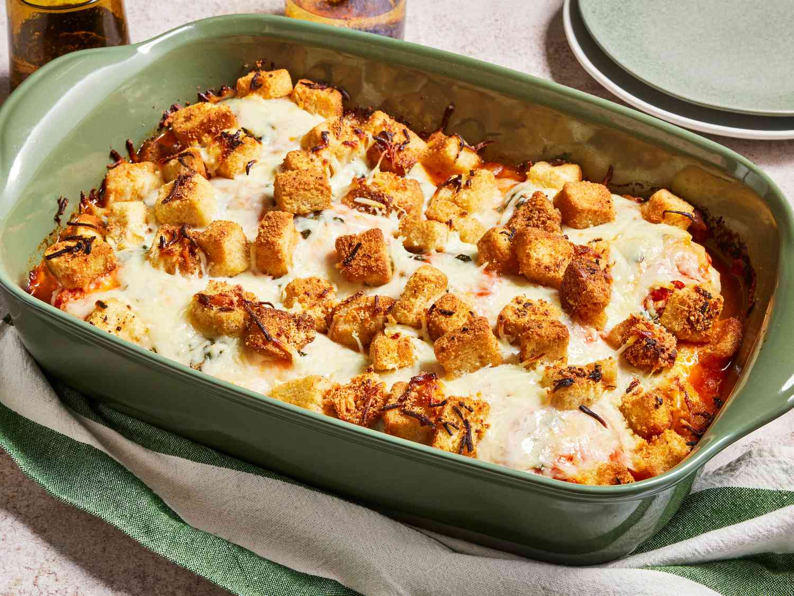

Chicken Parmesan Casserole

Description
Easy Chicken Parmesan Casserole: A Comforting One-Dish Classic
This comforting and fuss-free casserole transforms classic chicken Parmesan into a simple, satisfying one-dish meal.
Tender rotini pasta is combined with cooked chicken (either freshly cubed, rotisserie, or canned), gooey mozzarella cheese, and rich marinara sauce.
The mix is topped with a layer of seasoned breadcrumbs, covered with foil, and baked until the cheese melts delightfully—about 35 minutes—resulting in golden, bubbly perfection.
With just 5 minutes of prep and 45 minutes of bake time, it yields six generous servings, each packing a balanced 359 calories, 24g of protein, and a pleasing blend of flavors that makes it a go-to weeknight favorite
Ingredients
- 2 cups rotini pasta
- 12 ounces cooked chicken, cubed
- 1 cup shredded mozzarella cheese
- 2 cups marinara sauce
- ½ cup seasoned bread crumb
Steps
-
Gather all ingredients and preheat your oven to 350°F (175°C)
-
Fill a large pot with lightly salted water and bring it to a rolling boil over high heat.
Cook 2 cups rotini until tender yet firm to the bite (about 8 minutes), then drain.
-
In a large casserole dish, stir together the cooked rotini, 12 ounces cooked cubed chicken, and 1 cup shredded mozzarella cheese.
-
Pour 2 cups marinara sauce over the pasta mixture, then sprinkle ½ cup seasoned breadcrumbs evenly on top.
Cover the dish with aluminum foil.
-
Bake in the preheated oven for about 35 minutes, or until the cheese is melted and everything is heated through.
-
Serve and enjoy your cozy, cheesy casserole!
Home